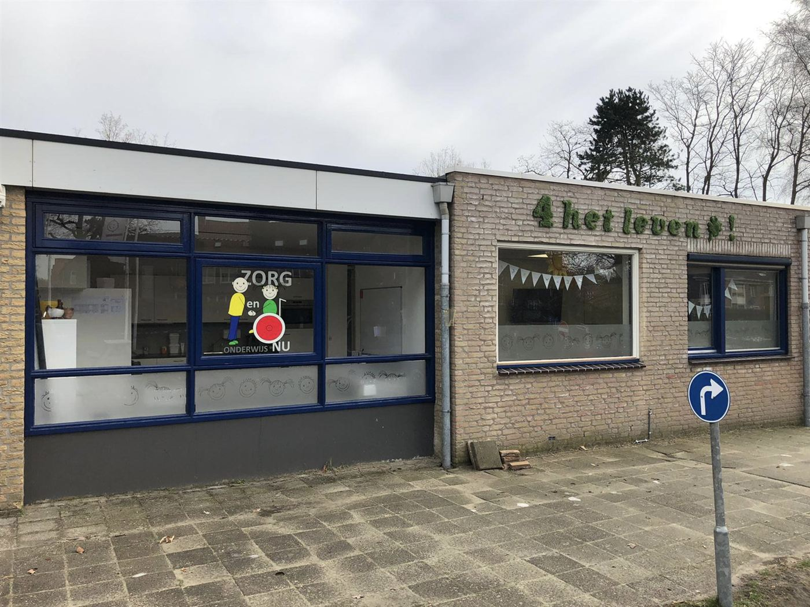

Ontwikkelingsgerichte dagbesteding
Een dagprogramma op maat voor kinderen van 0 tot en met 13 jaar, met een aparte groep voor kinderen met autisme en een verstandelijke beperking.
ZON biedt dagopvang voor kinderen met een complexe zorgvraag aan — midden op een gewone basisschool. Zo groeien kinderen mét en zónder beperking samen op: samen leren, samen spelen.
ZON biedt dagopvang voor kinderen met een complexe zorgvraag aan.
Wij zijn een Algemeen Nut Beogende Instelling (ANBI) en als zodanig door de Nederlandse Belastingdienst aangemerkt.
(Meervoudig) gehandicapte kinderen zijn van harte welkom (0–13 jaar).
De Kreek, Kiemkade, De Rode Schouw en De Krabbenkooi in Bergen op Zoom, en De Rode Schouw in Halsteren.
Wilt u ZON in het kort doornemen? Klik hier voor onze folder.
Er is op dit moment 1 vacature. Voor andere functies zijn open sollicitaties welkom.
Lees verder →Er zijn op dit moment geen plekken vrij. Bellen voor een rondleiding kan altijd.
Rondleiding aanvragen →De gemiddelde score van de enquête was een 8,9! Daar zijn we trots op.
Lees verder →We gaan met zijn allen voor ontwikkeling van de kinderen — de gemiddelde score van de enquête was een 8,9!
Er is op dit moment 1 vacature. Voor andere functies zijn open sollicitaties welkom.
Er zijn op dit moment geen plekken vrij. U kunt wel altijd bellen voor een rondleiding.
Een klein, vertrouwd team werkt elke dag aan groei — op het gebied van bewegen, communiceren, eten en drinken, en samen zijn.
Een dagprogramma op maat voor kinderen van 0 tot en met 13 jaar, met een aparte groep voor kinderen met autisme en een verstandelijke beperking.
Deskundige verpleegkundige zorg is ingebed in de dag. Ontwikkelingssprongen maken we op motoriek, eten en drinken, en communicatie.
Het hart van ZON: integratie. Kinderen dagen elkaar uit, prikkelen elkaar en leren van elkaar — mét en zónder beperking.
Kleine groepen, korte lijnen en veel aandacht. Ouders waarderen sfeer en uitstraling met een dikke voldoende.
Op een gewone basisschool leren alle kinderen dat niemand wordt buitengesloten. Dat bereidt voor op een samenleving waarin iedereen meetelt. Onze groepen huren ruimte in bestaande scholen, zodat ontmoeting vanzelfsprekend wordt: in de kring, in de zandtafel, in de poppenhoek.
Het concept werkt. We zien het elke dag, en ouders zien het ook.
Lees ons verhaal“Omdat ik steeds haar handje kan vasthouden om met haar te spelen, kunnen we samen spelen.”
— Renée, 6 jaar“Met Nienke kan ik in de zandtafel en in de poppenhoek samen spelen.”
— Sterre, 6 jaar“Een school die leert dat niemand wordt buitengesloten, bereidt voor op een samenleving waarin iedereen meetelt.”
— Het bestuur van ZONU wilt de beste plek voor uw kind. Wij denken graag met u mee — begin met een rondleiding, zonder verplichting.
Als ANBI-stichting binnen het Samen naar School-netwerk werken we transparant samen met verwijzers, gemeenten en zorgkantoren.
Een school die leert dat niemand wordt buitengesloten, bereidt voor op een samenleving waarin iedereen meetelt!
Elke groep zit op een reguliere basisschool. Aanmelden kan altijd — een rondleiding regelen we graag.



Na de zomervakantie opent ZON een vierde groep op basisschool De Krabbenkooi in Bergen op Zoom.
Lees verder →Een korte kennismaking met de mensen, de plekken en de manier waarop we bij ZON samenwerken.
Bekijk →Resultaten van het klanttevredenheidsonderzoek 2020/2021: sfeer en uitstraling scoren hoog. Daar zijn we trots op.
Lees verder →Er is soms een wachtlijst, maar u kunt altijd bellen of langskomen. Samen bekijken we of ZON de beste plek is voor uw kind.